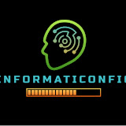

CANAL DE YOUTUBE |
LENGUAJES |
IDIOMAS |
NÚMERO DE LIKES PROMEDIO |
NÚMERO DE SUSCRIPTORES |
DESCRIPCIÓN |
|---|---|---|---|---|---|
 Programación ATS |
|
Español |
15 k |
654 k |
En este canal podrás encontrar tutoriales didácticos de programación, y ademas temas interesantes en Curiosidades de Programación |
 INFORMATICONFIG |
|
Español |
342 |
64,7 K |
¡Bienvenidos a Informaticonfig! |
 15 k
15 k
- C++
- Python
Idioma: Español
Información: En este canal podrás encontrar tutoriales didácticos de programación, y ademas temas interesantes en Curiosidades de Programación
- C++
- Python
Idioma: Español
¡Bienvenidos a Informaticonfig!
En este emocionante rincón cibernético, exploramos el vasto universo de la informática de una manera amigable, accesible y divertida. ¿Eres un apasionado de la tecnología, un entusiasta de la programación, o simplemente alguien curioso por descubrir el mundo digital? ¡Has llegado al lugar correcto!
Este canal está diseñado para satisfacer a todos los niveles de experiencia, desde principiantes hasta expertos. Aquí encontrarás:
🖥️ Tutoriales paso a paso: Aprende a programar, configurar herramientas, resolver ejercicios y mucho más.
No importa si eres un novato curioso o un experto en busca de nuevos desafíos, en Informaticonfig estamos comprometidos a ayudarte a expandir tus conocimientos y habilidades en el mundo de la informática.
No olvides suscribirte, activar las notificaciones y unirte a nosotros en este emocionante viaje hacia el futuro digital. ¡Estamos ansiosos por explorar el mundo de la informática contigo!